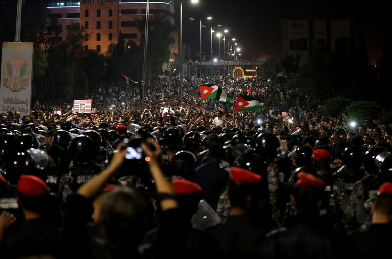

Safe in Hungary, Viktor Orban Pushes His Message Across Europe
Allies of Mr. Orban, Hungary’s far-right leader, are buying media outlets across Central and Eastern Europe, extending his influence.

Jordan’s Prime Minister Quits as Protesters Demand an End to Austerity
It was unclear if the government, squeezed by Persian Gulf kingdoms and Western lenders, would drop plans to raise taxes and prices.
Guatemala Volcano’s Death Toll, Now at 65, Is Likely to Rise
Emergency workers were searching through layers of ash for survivors after the eruption of the volcano less than 30 miles from the capital.
Critics Slam Rodrigo Duterte for Asking a Woman to Kiss Him Onstage
The Philippine president was accused of abusing his authority after kissing the woman on the lips during an event for overseas Filipino workers in South Kore